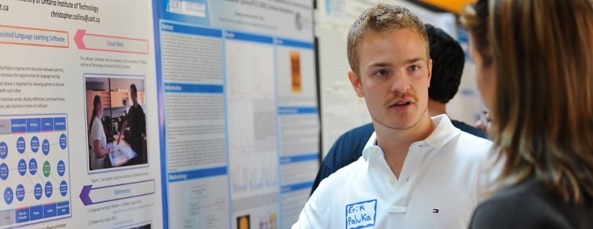

Research Interests & Focus of Work
My research interests lie within the realm of human-computer
interaction (HCI). Specifically
I am a former member of the vialab research reading group at UOIT. Click here to see a subset of the Computer Science research papers that I have read in-depth.
- Natural user interfaces (NUI)
- Spatial and multi-touch interaction
- Information visualization
- Collaborative learning and computer-supported cooperative work
- User experience
- User interface design
I am a former member of the vialab research reading group at UOIT. Click here to see a subset of the Computer Science research papers that I have read in-depth.
I am a full stack JavaScript developer (front-end & back-end), and
I generally develop using these languages/APIs:
- English - Native Language
- French - Professional Proficiency with 12 years of French Immersion
- React + Redux
- Node.js + express.js
- Java & Processing
I have attended the following research conferences
-
Symposium on User Interface Software and Technology (UIST)
- 2012 in Cambridge, Massachusetts, United States
- 2013 at the University of St Andrews, Scotland, United Kingdom
-
Interactive Tabletops and Surfaces Conference (ITS)
- 2013 at the University of St Andrews, Scotland, United Kingdom
-
GRAND NCE Conference & Canada 3.0
- 2013 in Toronto, Ontario, Canada
-
Conference on Human Factors in Computing Systems (CHI)
- 2014 in Toronto, Ontario, Canada
-
NSERC Digital Surface Software Application Network (SurfNet)
workshop
- 2011 at the University of Calgary in Alberta, Canada
- 2012 at the University of Waterloo in Ontario, Canada
- 2013 at the University of Calgary in Alberta, Canada
- 2014 at the University of Calgary in Alberta, Canada
-
Graphics Interface (GI) — International conference on
Graphics, Visualization and Human-Computer Interaction
- 2015 at Saint Mary's University and Dalhousie University in Halifax, Nova Scotia, Canada
Website optimized for